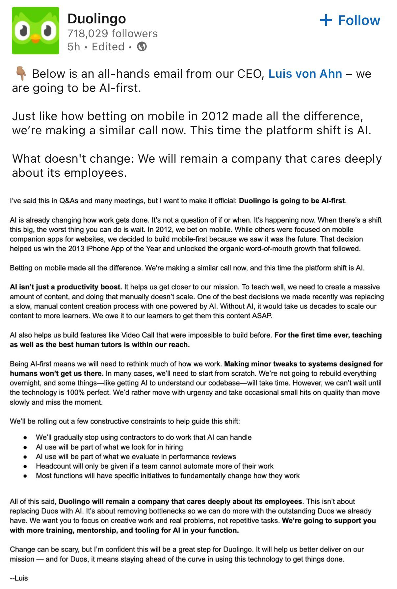

"להיות AI-First לא אומר להחליף אנשים, אלא ללמד אותם איך להפיק פי 10 יותר בעזרת הכלים החדשים."
פורסם במקור ב LinkedIn
"להיות AI-First לא אומר להחליף אנשים, אלא ללמד אותם איך להפיק פי 10 יותר בעזרת הכלים החדשים."
- מתוך ההודעה הפנימית של מנכ"ל Duolingo על המעבר המלא ל-AI.
Duolingo משנה כיוון: כמו שב-2012 הם בחרו לבנות אפליקציות מובייל עוד לפני שכולם הבינו את הפוטנציאל, עכשיו הם שמים את כל הכובד על AI.
מה זה אומר בפועל?
✅ במקום לייצר ידנית תכנים חדשים ללמידה, מערכות AI ייצרו אוטומטית שיעורים מותאמים אישית לכל תלמיד.
✅ מערכות AI כבר היום מאפשרות להציע חוויות לימוד שלא נופלות מאיכות שיעור עם מורה פרטי.
✅ כל צוות בחברה יידרש לבדוק איך להפוך תהליכים ידניים לאוטומטיים ולבנות מחדש כלים שמנצלים את היכולות של AI מהיסוד.
"אנחנו לא מפטרים כדי להכניס AI - אנחנו מצפים מהעובדים ללמוד לעבוד עם הכלים החדשים, להיות יותר יעילים, ולקבל תמיכה מלאה בדרך לשם."
בעיני זו הגישה הנכונה להסתכל על המהפכה. העובדים מקבלים זרוע ביונית שמאפשרת להם לפעול ביעילות רבה יותר, אבל עדיין צריך להפעיל אותה ועדיין יש בקלוג עצום של עבודה.
זה מתקשר גם למשפט המפורסם של מנכ״ל NVIDIA שאני מאוד אוהב:
"AI תבצע 50% מהעבודה עבור 100% מהאנשים."
